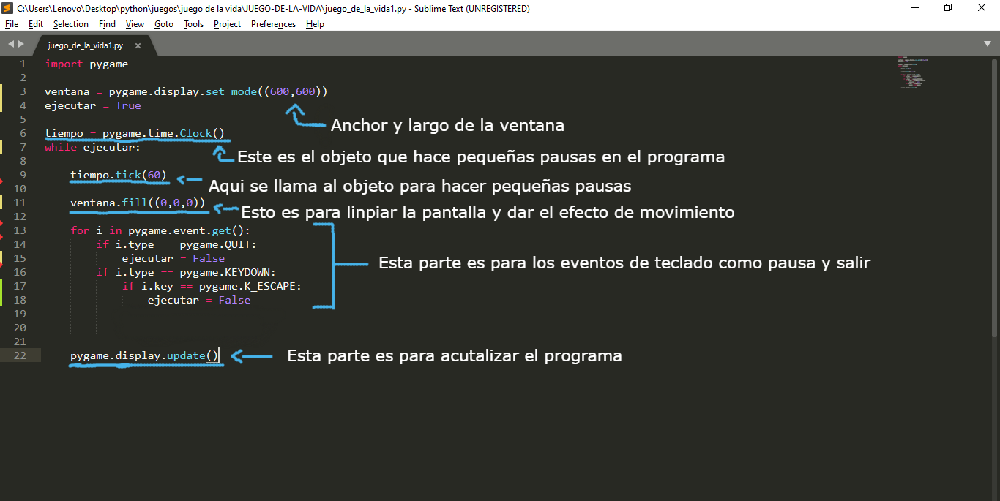
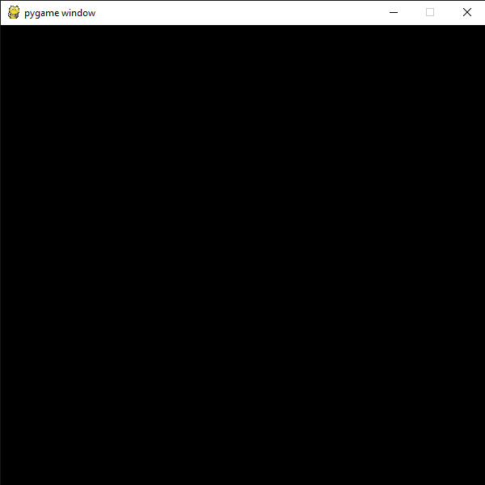
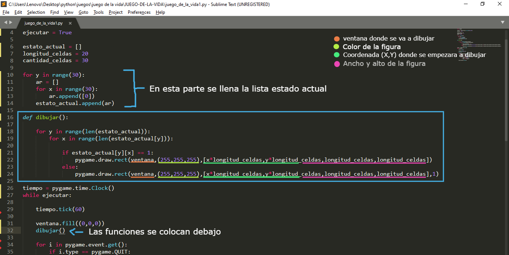
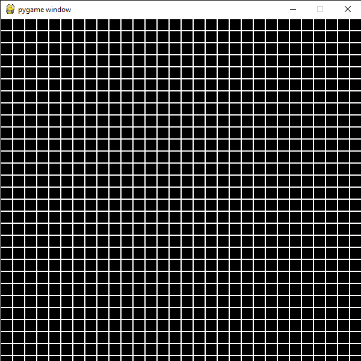
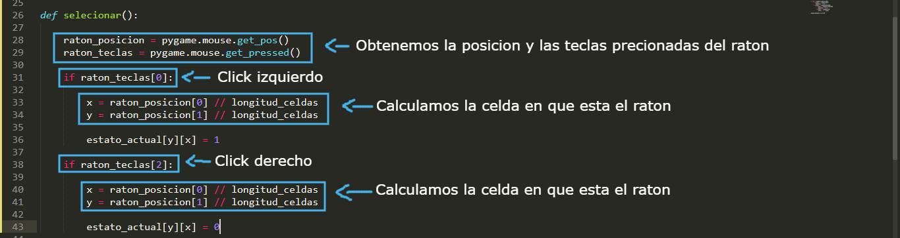
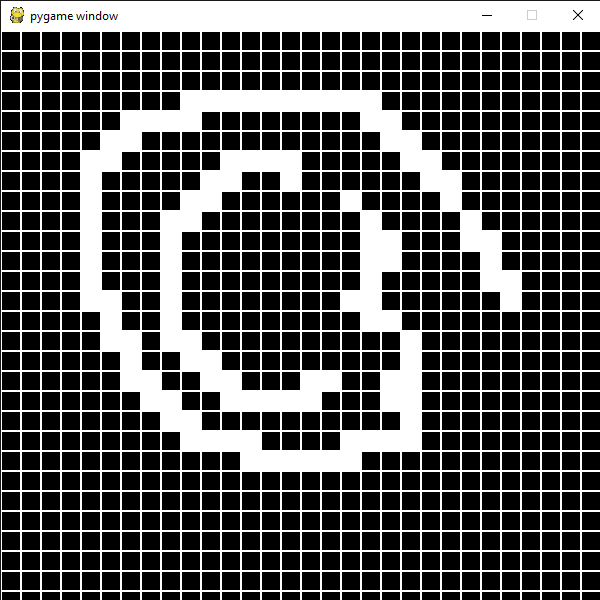
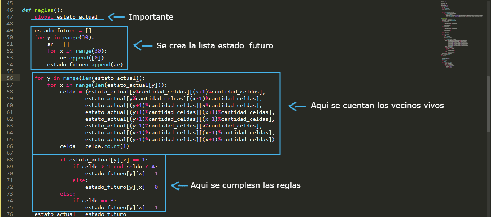
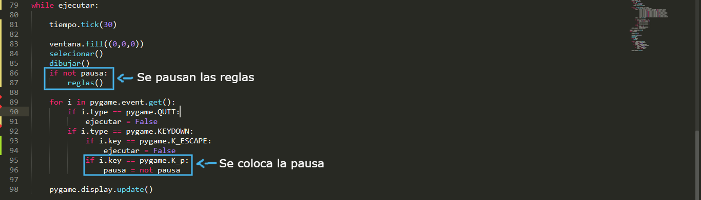

Hola bienvenidos a este tutorial de crear el juego de la vida con python. Si estas interesado o interesada en programar el juego de la vida de john conway este tutorial te servira. Te explicare como preogramarlo paso a paso y si quieres tambien tienes el codigo de github por si quieres copiarlo. Este tutorial esta pensado para personas que ya saben programar pero no saben como crear el juego de la vida por lo que no se explican cosas como que es una lista, que es una variable o que es una funcion etc. Eso sera para un futuro tutorial o curso, ademas en este tutorial se usara pygame para crear el juego y aunque explico algunas cosas de pygame hay cosa que no le tomo demaciada importancia decir porque este tutorial esta pensado en personas que ya saben usar pygame pero si no lo sabes usar no hay problema en poco tiempo hare un toturial de como usar pygame para hacer tus propios juegos
Debemos crear una ventana con las opciones basicas como cerrar ventana y hacer pequñas pausas para que se vea mejor y el programa tenga mas tiempo para procesar, esto lo podemos hacer de esta manera
Como pueden ver la manera de cerrar esta ventana es precionando (X) de la ventana o precionando el boton Esc
Debemos crear una lista bidimencional que pueden llamar como quieran, en mi caso la llamare estado actual, tambien variables para la longitud de una celda y la cantidad de celdas, en este caso la cantidad de celdas sera 30, si ustedes quieren mas o menos celdas pueden modificar la variable cantidad de celdas y la longitud de la celda. Por ultimo flata llenar la lista con valores ceros y crear una funcion para que se dibujen las celdas que veremos.
 Queda de esta manera. En la funcion pygame.draw.rect() primero se espesifica la ventana en donde se va adibujar (se coloca el objeto ventana que se creo al inicio),el color de relleno en este caso es blanco (255,255,255) en rgb, la coordenada X e Y donde se va a empezar a dibujar la figura, el ancho y alto y por ultimo se puede colocar un uno para indicar que el color de la figura se coloque en el borde, si no pones nada el color se colocara de fondo en la figura. Todas las funciones que dibujen algo se colocan debajo de la funcion ventana.fill() para que no se vea una ventana en negro. Solo falta las reglas y colocar la opcion de seleccionar.
Para la opcion de seleccionar creamos una funcion de esta manera Tenemos que obtener las coordenadas y las teclas que se precionan del raton. Cuando se obtiene lo que nesecitamos, calulamos la celda (X,Y) en la que esta el cursor si se preciono el boton izquierdo se coloca un uno a la celda seleccionada y si se preciona el boton derecho se coloca un cero, de esta manera podemos seleccionar y deseleccionar celdas para poder controlar el flujo del programa Solo faltan las reglas.
 Las reglas funcionan de esta manera, si una celda con un valor 0 tiene tres vecinos vivos la esta celda vivira de otra manera segura muerta, si la celda tiene el valor de uno y tiene dos o tres vecinos vivos esta celda vivira de otra manera morira. Y esto se guarda en una lista bidimenciona que llamaremos estado futuro para que posteriormente el valor de estado futuro se guarde en estado actual y que siga el ciclo del programa una y otra ves. Recuarde|n colocar global antes de estado_actual, esto es para que se pueda modificar. Primero recorremos la lista estado_actual y vemos cuantos vecinos tiene vivos para saber que hacer, cuando se sabe si la celda segura viva o muerta esto se guarda en la lista estado_futuro y esto se hace con todas la celdas. Cuando se termina de recorrer la lista estado_actual todo lo que se guardo en la lista estado futuro se guarda en la lista estado_actual, en otras palabras se actualiza los estados de las celdas. Bueno aqui hay que aclara una cosa la lista estado_futuro esta creada dendro de la funcion reglas porque si la creamos junto a la lista estado_actual lo que pasara es que cuando guardemos estado_futuro en estado_actual realmente contentran lo mismo en cada momento y cuando guardemos los estado futuros de las celdas no se guardaran en estado_actual cuando terminemos de recorrer todas las celdas sino que se guardara en cada momento que guardemos los estados futuros, osea en cada iteracion lo que lleva a que haya errores en los estado futuros. Ahora solo falta colocar la opcion de pausa.
Finalmente debemos colocar la opcion de pausa que se hara presionando la tecla (P). Debemos crear na variable llamada pausa en el inicio que tenga el valor False y que el valor de la variable cambie al opuesto cuando se presione la tecla (P). Mientras el valor de pausa sea False e ejecutaran las reglas.
Listo ya tienes el juego de la vida programado.
Links que te pueden interesar
Codigo de github Documentacon de pygame